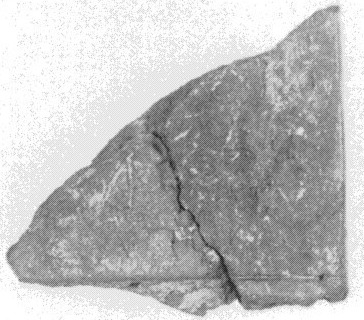
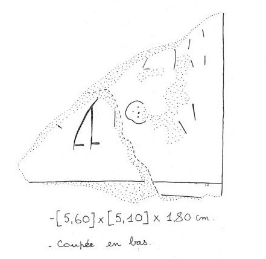

| side.line | statement | logogram | number | fraction |
| supra mutila | ||||
| .1 | ]- TA | 2 | ||
| .2 | ]-JE | 2 | ||
| .2 | QE-[•] | 1 | ||
| _____________________________________________________________________ | ||||
| _____________________________________________________________________ | ||||